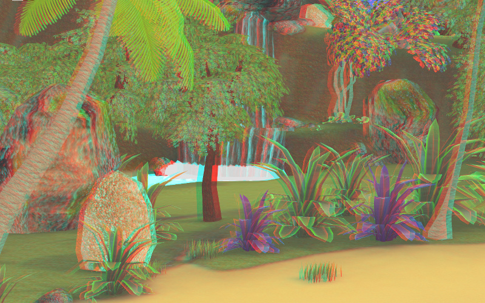

Постпроцессинговые эффекты¶
Размытие при движении¶
Эффект размытия при движении (motion blur) служит целям увеличения реализма интерактивной сцены. Он проявляется при движении камеры или объектов в виде “смазывания” изображения.

Активация¶
Выставить опцию Enable Motion Blur на панели Scene > Blend4Web.
Дополнительные настройки¶
На панели World > Blend4Web > Motion blur settings:
- Motion blur factor
- Степень проявления эффекта. Чем выше значение, тем сильнее эффект размытия. Значение по умолчанию 0.01.
- Motion blur decay threshold
- Степень плавности размытия. Чем выше значение, тем более резким будет эффект. Значение по умолчанию 0.01.
Глубина резкости камеры¶
Эффект глубины резкости камеры (depth of field, DOF) акцентирует внимание зрителя на части сцены. Проявляется в размытии изображения ближе и дальше от фокуса камеры.

Активация¶
Выбрать активную камеру, перейти на панель ее настроек (
Object Data).Далее возможны два варианта:
- На панели
Depth of Fieldв менюFocusвыбрать объект, на котором будет сфокусирована камера. В этом случае при удалении или приближении к этому объекту будет происходит соответствующая коррекция фокуса камеры. - На панели
Depth of Fieldустановить ненулевое значениеDistance(в метрах). В этом случае фокус камеры будет располагаться на заданном расстоянии от камеры и перемещаться вместе с ней.
- На панели
Дополнительные настройки¶
На панели настроек активной камеры Object Data > Blend4Web:
- DOF front distance
- Расстояние от фокуса до ближней к камере плоскости, за которой происходит полное размытие (в метрах). Значение по умолчанию 1.0.
- DOF rear distance
- Расстояние от фокуса до дальней от камеры плоскости, за которой происходит полное размытие (в метрах). Значение по умолчанию 1.0.
- DOF power
- Степень размытия. Значение по умолчанию 3.0.
Взаимное затенение¶
Эффект взаимного затенения (screen-space ambient occlusion, SSAO) применяется с целью воспроизведения сложного переотражения света от объектов. Пространство между близкими объектами менее доступно для рассеянного света и поэтому затеняется сильнее.
{kind=link}
Активация¶
Выставить опции Enable SSAO и Render Shadows на панели Scene > Blend4Web.
Дополнительные настройки¶
На панели “мира” World > Blend4Web > SSAO Settings:
- Radius Increase
- Фактор умножения радиуса сферического сэмплинга при переходе от внутреннего кольца к внешнему. Значение по умолчанию 3.0.
- Use Hemisphere
- Использовать для расчёта затенения полусферический сэмплинг вместо сферического. Помимо этого используется другой закон затенения.
- Use Blur Depth Test
- Если активировано - используется размытие SSAO на основе буфера глубины. Иначе - размытие по квадарту 4х4 по соседним пикселям.
- Blur Depth Test Discard Value
- Влияние разницы глубины сэмлов на их вес в размытии. Используется при активированном параметре
Use Blur Depth Test. Значение по умолчанию 1.0. - Influence
- Степень проявленности эффекта взаимного затенения. Значение по умолчанию 0.7.
- Distance Factor
- Фактор уменьшения проявленности эффекта взаимного затенения с расстоянием. Значение по умолчанию 0.0 (т.е. уменьшения нет).
- Samples
- Количество сэмплов (чем больше, тем лучше качество, но меньше производительность). Значение по умолчанию 16.
Сумеречные лучи¶
Эффект сумеречных лучей (crepuscular rays, “god rays”) симулирует известное природное явление - свечение освещенных областей воздуха.

Активация¶
Выставить опцию Enable God Rays на панели Scene > Blend4Web.
Дополнительные настройки¶
На панели “мира” World > Blend4Web > God Rays Settings:
- God Rays Intensity
- Степень проявленности эффекта. Значение по умолчанию 0.7.
- Maximum Ray Length
- Фактор длины лучей. Определяет шаг сэмплов радиального размытия. Значение по умолчанию 1.0.
- Steps Per Pass
- Количество шагов на один сэмпл. Значение по умолчанию 10.0.
Эффект засветки ярких деталей¶
Эффект засветки (Bloom) проявляется при наличии на экране элементов с большой разницей в яркости. Вокруг ярких деталей создается светящийся ореол.

Активация¶
Выставить опцию Enable Bloom на панели Scene > Blend4Web.
Дополнительные настройки¶
На панели “мира” World > Blend4Web > Bloom Settings:
- Key
- Интенсивность эффекта свечения.
- Blur
- Степень размытия засветки.
- Edge Luminance
- Граничное значение относительной яркости элемента, выше которого начинает проявляться эффект засветки.
Подсветка контура (outlining)¶
В результате применения эффекта подсветки контура вокруг объекта появляется светящийся ореол произвольного цвета.

Активация¶
Эффект подсветки контура активируется программно через API. Может быть реализован как эффект постоянного свечения, так и затухающего, пульсирующего и любой другой модели. Для включения возможности подсветки объектов необходимо убедиться, что в панели Scene > Blend4Web поле Enable Object Outlining установлено в состояние ON или AUTO.
Дополнительные настройки¶
На панели Object > Blend4Web:
- Enable Outlining
- Разрешить использование эффекта подсветки контура на конкретном объекте.
- Outline Duration
- Длительность анимации подсветки, сек. Значение по умолчанию 1.
- Outline Period
- Период повторения анимации подсветки, сек. Значение по умолчанию 1.
- Outline Relapses
- Количество итераций анимации подсветки. В случае 0 анимация будет повторяться бесконечно. Значение по умолчанию 0.
- Outline on Select
- Активация анимации подсветки при выделении объекта. Для данного случая необходимо выставить опцию
Selectable. При необходимости реализации собственной модели подсветки объекта следует отключить эту опцию во избежание конфликта.
На панели World > Blend4Web:
- Objects Outline Сolor
- Общий цвет эффекта для всех объектов. Значение по умолчанию (1,1,1), т.е. белый.
- Outline Factor
- Толщина и яркость ореола, окружающего объект. Падает с уменьшением параметра. Значение по умолчанию 1.
При управлении через API настройки на панели World > Blend4Web воспринимаются как настройки по умолчанию.
Анаглиф стереоизображение¶
{kind=link}
Активация¶
Режим стереоизображения предназначен для просмотра контента в специальных очках и активируется приложением.
Дополнительные настройки¶
Нет.
Коррекция цвета¶

Активация¶
Выставить опцию Enable Color Correction на панели Scene > Blend4Web.
Дополнительные настройки¶
На панели “мира” World > Blend4Web > Color Correction Settings:
- Brightness
- Яркость. Значение по умолчанию 0.0.
- Contrast
- Контрастность. Значение по умолчанию 0.0.
- Exposure
- Экспозиция. Значение по умолчанию 1.0.
- Saturation
- Насыщенность. Значение по умолчанию 1.0.
Сглаживание¶
Сглаживание (anti-aliasing) необходимо для уменьшения влияния нежелательных артефактов рендеринга (“зубчатости”).

Активация¶
Выставить опцию Enable Antialiasing на панели Scene > Blend4Web.
Дополнительные настройки¶
Метод сглаживания назначается одновременно с выбором профиля работы движка.
- низкое качество - антиалиасинг отключен
- высокое качество - метод антиалиасинга FXAA (Fast Approximate Anti-Aliasing), предложенный Nvidia
- максимальное качество - метод антиалиасинга SMAA (Enhanced Subpixel Morphological Anti-Aliasing), предложенный Crytek
Свечение (glow)¶
Эффект возникновения ореола вокруг светящихся объектов, возникающий вследствие рассеивания света в атмосфере и внутри человеческого глаза.

Активация¶
Добавить в нодовый материал ноду B4W_GLOW_OUTPUT. Для включения возможности свечения в панели Scene > Blend4Web поле Enable Glow Materials должно быть установлено в состояние ON или AUTO.
Дополнительные настройки¶
На панели World > Blend4Web в секции Glow Settings:
- Render Glow Materials Over Blend
- Отрисовывание эффекта свечения поверх прозрачных объектов. По умолчанию выключено.
- Small Glow Mask Intensity
- Интенсивность свечения по малой маске. Значение по умолчанию 2.0.
- Large Glow Mask Intensity
- Интенсивность свечения по большой маске. Значение по умолчанию 2.0.
- Small Glow Mask Width
- Ширина свечения по малой маске. Значение по умолчанию 2.0.
- Large Glow Mask Width
- Ширина свечения по большой маске. Значение по умолчанию 6.0.